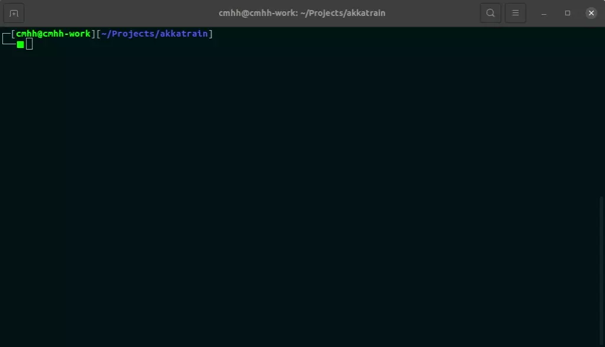

Overview
In a previous post, we looked at how we could consume messages in a Kafka topic, and use those messages for online training of a classifier. In this post, we look at how Akka could be used to solve the same problem, in broadly the same way. Akka is an implementation of the actor model, and is particularly well suited for building event-driven, reactive systems since the actors involved communicate exclusively by sending and reacting to messages.
Problem Description
As before, we download the popular MNIST database of handwritten digits. The database contains hand-written digits represented as 28x28 pixel arrays with integer values in the range \([0,255]\) representing grey-scale colours. The images are split into training and test sets with 60000 and 10000 images, respectively. The following image contains a collage of randomly selected examples:

I must confess that I am a HUGE Akka fan, and in this case I think it is cooler than Kafka, even if perhaps not as well suited to situations requiring extremely high throughput. All that said, I’m not yet that familiar with the newer typed actors, so things here might not be completely idiomatic.
Our solution will consist of three actors which we’ll call producer, consumer, and coordinator for lack of anything better. When sent a labelled image, our consumer will use that image to update a classifier, but our consumer will also respond to other message types. Specifically, when asked, the producer will send the current accuracy over the MNIST test set, and it will also send the actual classifier on request. The producer will simply send messages to the consumer whenever we tell it to.
Implementation
The complete application can be found on GitHub at cmhh/akkatrain, and the README includes enough information to get up and running. Note that the repository includes the MNIST database since the data is only 12MB all up, and the original source urges users to ‘Please refrain from accessing these files from automated scripts with high frequency. Make copies!’. Either way, in this section we discuss the most important bits in more detail.
Serialisation / Deserialisation
Akka is designed to be scalable, and our actor system can be spread across multiple JVM instances, on disparate servers. For actors to communicate with each other outside a single JVM instance, we would need to serialise our messages. Custom serialisers are easy enough to make–we simply create a class which mixes in akka.serialization.Serializer, and then we add entries in the akka.actor.serializers and akka.actor.serialization-bindings section of our configuration (see Serialization) to make use of them. However, in this example we limit ourselves to a single JVM instance, and so we do not need to worry.
Model Our Messages
In order to send labelled images, we’ll re-use the MnistRecord type from the Kafka implementation, so, please excuse the duplication…
The MNIST database consists of handwritten images of 28x28 pixels, each assigned a label from 0 to 9. The image data is easily read from the provided files as an array of bytes in row-major order, so we define a simple case class as follows (the class has a number of methods, but we omit the details here):
case class Image(data: Array[Byte], rows: Int, cols: Int, byrow: Boolean)Labelled images can then be modelled simply, also using a case class, as follows:
case class MnistRecord(image: Image, label: Int)The MNIST data has been bundled as a resource in the provided sbt project, and a basic, single-use iterator is provided also. For example, to read the training data:
scala> val testIt = MnistIterator(MnistType.TRAIN)val testIt: org.cmhh.MnistIterator = <iterator>The rest of our messages will be modelled as singleton objects, or very simple case classes:
import akka.actor.typed.ActorRef
import org.deeplearning4j.nn.multilayer.MultiLayerNetwork
object messages {
sealed trait CoordinatorCommand
case object RequestAccuracy extends CoordinatorCommand
case class RequestSendImages(n: Int) extends CoordinatorCommand
case class RequestClassifier(f: String) extends CoordinatorCommand
case object Stop extends CoordinatorCommand with ProducerCommand with ConsumerCommand
case class Accuracy(value: Double, n: Int) extends CoordinatorCommand
case class Classifier(value: MultiLayerNetwork, f: String) extends CoordinatorCommand
sealed trait ProducerCommand
case class SendImages(sendTo: ActorRef[ConsumerCommand], n: Int) extends ProducerCommand
sealed trait ConsumerCommand
case class Image(image: MnistRecord) extends ConsumerCommand
case class SendAccuracy(replyTo: ActorRef[Accuracy]) extends ConsumerCommand
case class SendClassifier(replyTo: ActorRef[Classifier], f: String) extends ConsumerCommand
}All our producer does is send \(n\) images to the consumer, and it does this when sent a SendImages object. In this case, the producer sends messages but does not expect any sort of reply. The producer will also terminate when sent the Stop object, but also once it has traversed the full MNIST training set once (again, we’re simulating online learning here–it would be straightforward to implement other training scenarios, traversing the training set as many times as required, for example, and in a random order). The full implementation is as follows:
import akka.actor.typed.scaladsl.Behaviors
import akka.actor.typed.scaladsl.LoggerOps
import akka.actor.typed.Behavior
object Producer {
import messages._
private val images = MnistIterator(MnistType.TRAIN)
def apply(): Behavior[ProducerCommand] =
Behaviors.receive[ProducerCommand]{ (context, message) =>
message match {
case SendImages(r, n) =>
def loop(i: Int): Behavior[ProducerCommand] =
if (!images.hasNext) {
println("All images sent. Shutting down.")
Behaviors.stopped
} else if (i == n) {
Behaviors.same
} else {
r ! Image(images.next())
loop(i + 1)
}
loop(0)
case Stop =>
println("Producer is dead!")
Behaviors.stopped
}
}
}Our consumer is a little more complicated, but is still relatively simple. It can receive messages as follows:
Image- when received, it will update its private classifierSendAccuracy- when received, it will send anAccuracyobject to the senderSendClassifier- when received, it will send aClassifierobject to the sender
The full implementation of the consumer actors is as follows:
import akka.actor.typed.scaladsl.Behaviors
import akka.actor.typed.scaladsl.LoggerOps
import akka.actor.typed.Behavior
import org.nd4j.evaluation.classification.Evaluation
object Consumer {
import messages._
private val network = model.cnn()
private val mnistTest = new MnistDataSetIterator(100, MnistType.TEST)
def apply(): Behavior[ConsumerCommand] = run(0)
def run(n: Int): Behavior[ConsumerCommand] =
Behaviors.receive{ (context, message) => message match {
case Image(rec) =>
val im = rec.toNd4j
network.fit(im._1, im._2)
run(n + 1)
case SendAccuracy(replyTo) =>
replyTo ! Accuracy(accuracy, n)
Behaviors.same
case SendClassifier(replyTo, f) =>
replyTo ! Classifier(network.clone, f)
Behaviors.same
case Stop =>
Behaviors.stopped {() =>
println("Consumer is dead!")
}
}
}
def accuracy: Double = {
val eval = network.evaluate[Evaluation](mnistTest)
eval.accuracy
}
}Note that actors can be created with an object-oriented or functional style, and we’ve opted for the functional approach here. So in the case of the consumer, we’ve tracked the number of total training images received, mostly to demonstrate how one might go about maintaining state–we could use mutable variables, but instead we define our Behavior recursively.
Rather than send messages directly to either of our producer or consumer actors, we communicate exclusively with a coordinator actor. We send the coordinator any of the following:
RequestSendImage- coordinator will tell the producer to sendImages to the consumerRequestAccuracy- coordinator will tell the consumer to send anAccuracyobjectRequestClassifier- coordinator will tell the consumer to send aClassifierobjectStop- tell both the consumer and producer toStop
import akka.actor.typed.scaladsl.Behaviors
import akka.actor.typed.scaladsl.LoggerOps
import akka.actor.typed.Behavior
import java.io.File
object Coordinator {
import messages._
def apply(): Behavior[CoordinatorCommand] = Behaviors.setup { context =>
val consumer = context.spawn(Consumer(), "consumer")
val producer = context.spawn(Producer(), "producer")
Behaviors.receiveMessage { message => {
message match {
case RequestSendImages(n) =>
producer ! SendImages(consumer, n)
case RequestAccuracy =>
consumer ! SendAccuracy(context.self)
case RequestClassifier(f) =>
consumer ! SendClassifier(context.self, f)
case Accuracy(accuracy, n) =>
println(f"accuracy: %%1.4f, training images seen: %%05d".format(accuracy, n))
case Classifier(n, f) =>
n.save(new File(f))
case Stop =>
consumer ! Stop
producer ! Stop
}
Behaviors.same
}}
}
}Using the Actors
We always need an actor system to provide the overall context, and while it might not be best practice, we can make our system from a Coordinator:
import akka.actor.typed.ActorSystem
val system = ActorSystem(Coordinator(), "akkatrain")Then, to check the current classifier accuracy:
system ! RequestAccuracyTo have 1000 images sent to the consumer actor:
system ! RequestSendImages(1000)To fetch the classifier and save it to a file:
system ! RequestClassifier("mnist.model")And to shut everything down:
system ! Stop
system.terminate()The project contains a simple entry point which will create an actor system as above, and then send the full MNIST training set in batches of 500 images, reporting accuracy after each request. It is illustrative only, and uses Thread.sleep() to make things work just so (i.e., on a different machine with faster or slower performance, lack of GPU, etc., things will not work out so neatly!). The demo can be run as follows:
java -cp target/scala-2.13/akkatrain.jar org.cmhh.Main
Summary
In this post we demonstrated the basic usage of Kafka’s typed actors. The specific use-case for our actor system was to react to new messages in real-time, using them to update a classifier. There are a number of extensions that we could consider to make this more interesting, of course–we could develop web interfaces for interacting with out actors, and we could look other parts of the Akka ecosystem such as Akka streams (though the goal here was specifically to use the actor model).